The First Principle: Web layout needs to be fluid and responsive. Content should be able to align, space out, and re-order itself intelligently as the screen size changes.
The Core Problem (The "Old World"): Before Flexbox, creating even simple layouts was incredibly difficult and frustrating. You must show this "pain" to make your students appreciate the solution. Briefly mention the old "hacks":
"How do I center something vertically?" This was notoriously difficult, often requiring complex tricks.
"How do I make three columns the same height?" This often required JavaScript or fake backgrounds.
"How do I space items out evenly?" This involved complicated math with margins and widths.
Using float: Explain that float was designed for wrapping text around images, but developers co-opted it for full-page layouts, which led to fragile and confusing code (mentioning the need for "clearfix" hacks).
The Logical Solution: Create a new, dedicated layout model (display: flex) designed specifically for arranging a group of items in a single dimension (either a row or a column). This model should have powerful, built-in properties for alignment, spacing, and ordering. This is Flexbox.
The Vertical Centering Nightmare
The Goal: A seemingly simple task. You have a tall box, and you want to place a smaller box or a line of text perfectly in its vertical center.
The Pain (The Old Way): Show your students this code. Explain that for years, this was one of the most Googled questions in all of CSS.code
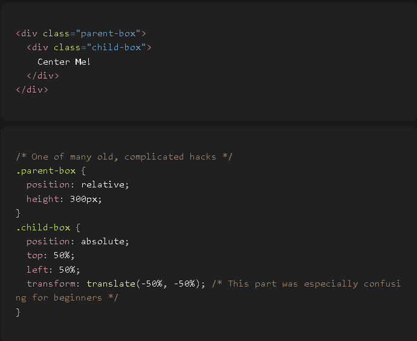
Explain the hack: "Developers had to make the parent a positioning context, then absolutely position the child. But top: 50% aligns the top edge of the child with the center line, so they had to use another trick, transform: translate, to pull the element back up by half its own height. This is complex, hard to remember, and feels like a hack."
The Flexbox Solution (The "Aha!" Moment): Now, show them how Flexbox solves this instantly.
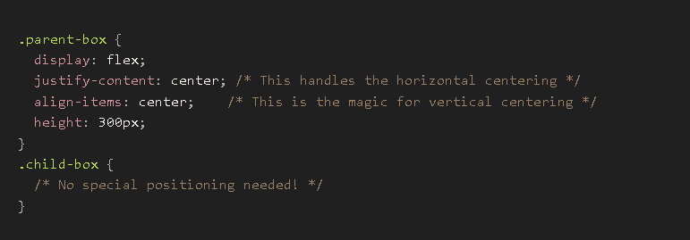
he Reveal: "With Flexbox, vertical centering is no longer a hack. It is a primary, built-in feature. You just tell the container align-items: center, and it's done. This one property solves one of the oldest problems in CSS."
Explain the main properties you apply to the parent container.
flex-direction: Controls the main axis.
Problem: Do I want my items in a row or a column?
Solution: Use flex-direction.
Values: row (default), column, row-reverse, column-reverse. (Show a visual for each).
Input: flex-direction: row;
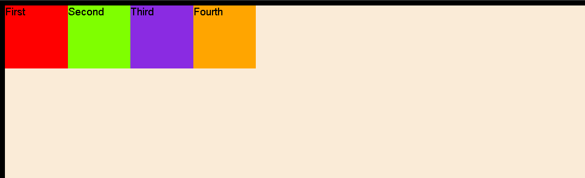
Input: flex-direction: column;
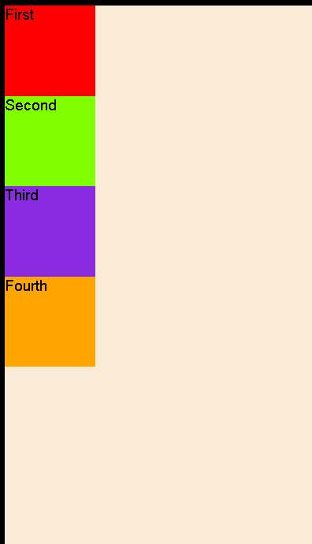
Input: flex-direction: row-reverse;
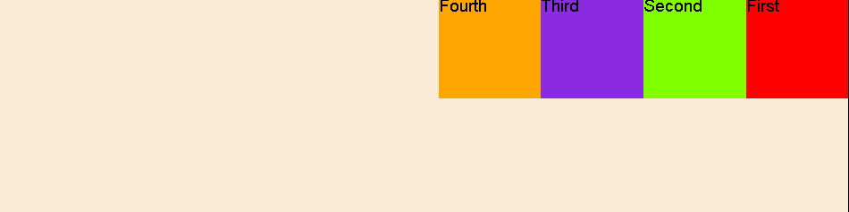
Input: flex-direction: column-reverse;
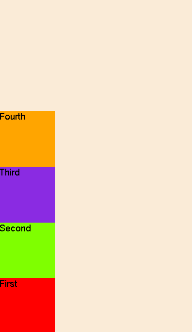
justify-content: The most important property. It aligns items along the main axis.
Problem: How do I space my items out horizontally (if in a row)?
Solution: Use justify-content.
Values: Visually demonstrate each one:
flex-start (default): All items clumped at the beginning.
flex-end: All items clumped at the end.
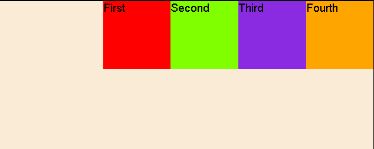
center: All items clumped in the middle.
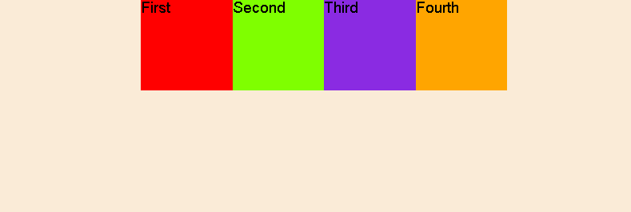
space-between: First item at the start, last item at the end, with even space between the others.
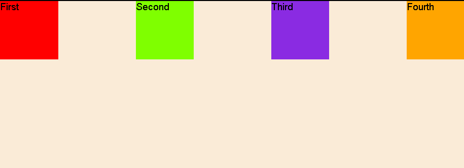
space-around: Even space around each item (so the space at the ends is half the space between items).
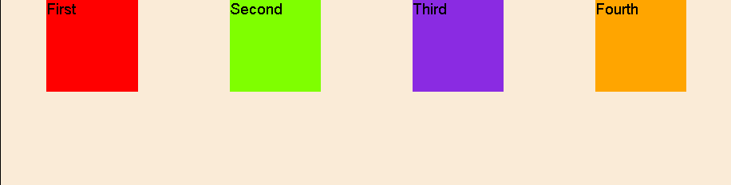
space-evenly: Even space everywhere—between items and at the ends.
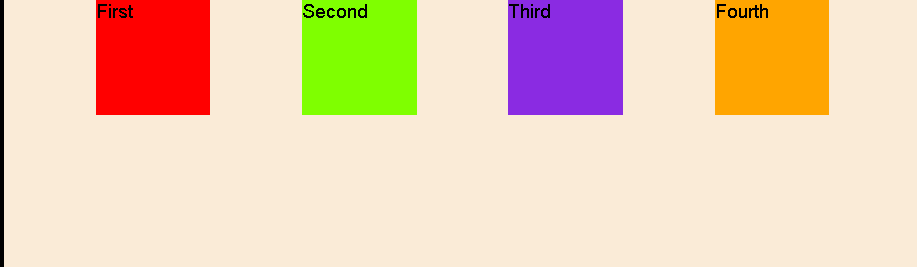
align-items: Aligns items along the cross axis.
Problem: How do I align my items vertically (if in a row)? This solves the "vertical centering" problem.
Solution: Use align-items.
Values:
stretch (default): Items will stretch to fill the height of the container.
flex-start: Aligned to the top.
flex-end: Aligned to the bottom.
center: Perfectly centered vertically.
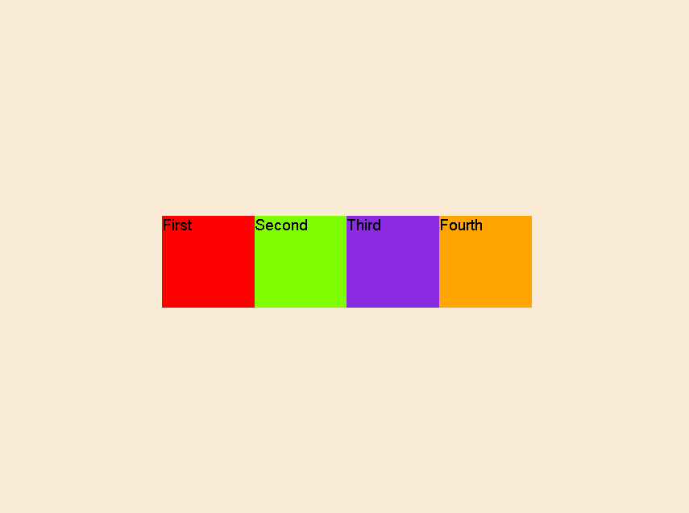
flex-wrap: Controls what happens when items run out of space.
Problem: I have five items, but only room for three on one line. What should happen?
Solution: Use flex-wrap.
Values: nowrap (default, items will overflow) vs. wrap (items will wrap to the next line). This is essential for responsiveness.
gap: The modern way to create space.
Problem: How do I create space between my items without using margins?
Solution: Use gap. It's simpler and more predictable than margins.
Example: gap: 20px; or row-gap: 10px; column-gap: 30px;
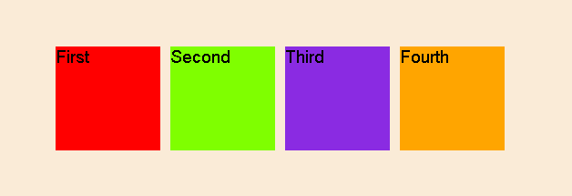
Now shift focus to the children. Sometimes one "worker" needs a different rule.
flex-grow: Controls how extra space is distributed.
Problem: I have extra empty space in my container. How do I tell one item to grow and fill it?
Solution: flex-grow. It takes a number (a proportion). flex-grow: 1; means "take up 1 share of the available space." Show how an item with flex-grow: 2; will take up twice as much space as an item with flex-grow: 1;.
flex-shrink: Controls how items shrink when there isn't enough space.
Problem: My items are overflowing. How can I tell one specific item not to shrink?
Solution: flex-shrink: 0;. The default is 1.
flex-basis: Sets the ideal starting size of an item before growing or shrinking.
Problem: How do I tell an item it "wants" to be 200px wide, but can grow or shrink from there if needed?
Solution: flex-basis: 200px;. Explain that this is more flexible than a hard width.
The flex Shorthand: The professional way.
Explain that flex combines flex-grow, flex-shrink, and flex-basis in one line.
Teach the most common shortcuts: flex: 1; (means grow and shrink as needed, from a basis of 0), flex: 0; (don't grow or shrink), flex: auto;.
align-self: An individual override.
Problem: My container has align-items: center;, but I want one specific item to be aligned to the top.
Solution: On that one item, use align-self: flex-start;.